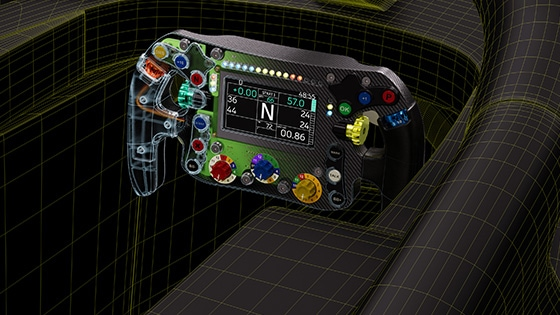
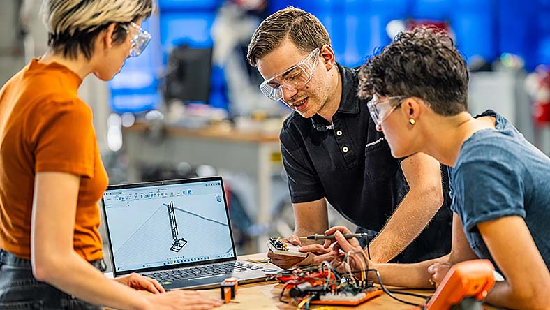

Fusion 360 到底值不值得掏钱？我用了半年算完这笔账
从免费版功能边界到付费各档位，按轻度/主力/重度三类使用强度拆分时间账，帮你三秒对号入座。
它到底值不值得掏钱？这个问题我对着它官网上的订阅页面盯了整整一个晚上。
半年前我在车间实习的时候第一次接触到 Fusion 360——设计师在电脑上建模，师傅在机床旁掏出手机翻模型，发现干涉就截图圈出来发回去。整个流程没有一个人需要跑到隔壁房间看电脑，那一瞬间我就被这套协作模式种草了。

但种草归种草，钱要不要掏，得掰开了算。
定价拆解：免费版给什么，付费版多什么
先说免费版。Autodesk 管它叫 Personal Use，面向非商业场景。你能做的事挺多：参数化建模、简单装配、基础仿真、出工程图、云存储也有额度。但几个硬边界把它卡死在「个人学习」和「小打小闹」的量级：
核心的限制在商业用途上——免费版的许可协议明确写了年营收超过十万美元的公司不能用它做生产。这一条把绝大多数正经公司挡在门外。其次是功能层面，CAM 刀路只能做最基础的两轴，复杂曲面和多轴加工直接锁死；仿真只能跑线性静态分析，复杂的模态、热分析、跌落测试都要付费；PCB 设计功能是阉割版，层数和元件数量都有限制。
付费版分三档。最便宜的那档叫 Standard，去掉了商业限制，CAM 解锁到三轴，仿真解锁到非线性和模态，PCB 也开放到完整功能。中间那档叫 Premium，多了五轴 CAM、高级有限元分析、塑料件仿真和增强版的生成式设计。最贵的那档叫 Ultimate，在 Premium 基础上再加了网络安全合规、本地缓存导出之类面向大型企业的功能。
我没直接报完整的年费数字，因为 Autodesk 的定价策略挺鸡贼——它永远在搞促销，官网标价比实际成交价高出一大截。而且还有按月订阅、按年订阅、教育优惠等一堆变量。如果你是学生或者老师，可以走教育通道直接免费拿完整功能，这是 Autodesk 给学术用户的福利，不需要花一分钱。需要自己下载试用的话，官方渠道就行。
算账：分三类人各算各的
不谈具体价格，我换一个更实用的维度——每单位时间能省多少钱。不同使用强度的人，账完全不一样。
轻度用户：免费版完全够用
轻度用户是什么样？业余爱好者、创客、在校学生，平时做做小物件、简单装配，偶尔出张图纸。这种场景下免费版的功能边界基本碰不到。我认识的几个 B 站 up 主做桌面级零件，全流程走免费版，没卡过一次壳。
如果你属于这一类，不用看付费版了。省下订阅费，把钱花在 CNC 加工的物料或者 3D 打印耗材上，比给 Autodesk 交年费划算得多。唯一需要注意的是别碰商业用途，等哪天你的小作坊年营收越过那条线，再考虑升级也不迟。
主力用户：时间账必须算清楚
主力用户是指每天都要在 Fusion 上花几小时的人——独立设计师、小型工作室、公司里的主力建模师。这一档是最纠结的：免费版的商业限制卡着你，但付费的价格又不便宜。
我自己就是在这一档犹豫了最久。帮朋友的工作室做外包设计，年营收刚过免费版的红线，不升级的话软件许可本身就是个定时炸弹。但升级的话，年费摊到我每天的工作时间里，相当于每天多花十几块钱。
算账的关键是：付费版解锁的那些功能，你每天到底用几次？CAM 从两轴升到三轴意味着什么？具体每档解锁了哪些刀路类型，文档里有完整的功能对比表。你之前是不是得把模型导出给专门的 CAM 工程师处理？如果是，那这个功能一年帮你省的外包费可能已经超过订阅价了。仿真同理，你是不是得把模型导出去跑 ANSYS 再导回来？那来回的格式转换和等待时间，换算成工时成本，一笔就能算清楚。
对我来说，最让我下定决心的不是某个单一功能，而是云协作。我们工作室三个人，每个人都在改同一个项目里的零件。以前用 SolidWorks，每天上班第一件事就是把模型打包、发群里、等对方回传最新版。换了 Fusion 之后，所有人直接在云端同一个项目里改，A 改完一个零件，B 刷新一下就能看到。这个功能单独拿出来可能不值那个价，但加上 CAM 解锁、加上仿真、加上移动端协作，整体账就平了。

重度用户：闭眼付，不要犹豫
重度用户不需要算账。如果你是一家正规制造业公司，设计团队五人以上，每天都要跑仿真、出五轴刀路、做塑料件模具仿真，那付费版是刚需——甚至 Standard 都不够用，直接上 Premium 或者 Ultimate。
这一档的决策逻辑很简单：你的竞争对手都在用，你不用的话效率就比人家低一截。Autodesk 的行业数据显示，使用 Fusion 360 付费版的制造企业，产品迭代周期平均缩短 30%。这个数字怎么来的不重要，重要的是你自己心里清楚，你现在的设计-制造-验证流程里有多少环节在靠人工和多个软件之间的格式转换硬撑。
替代方案：不付这笔钱有什么别的路
当然，付费不是唯一的路。
最直接的替代是同价位甚至更便宜的软件。Onshape 也是云端 CAD，定价和 Fusion 差不多，但它的免费版限制更严格——只能做五个文档。SolidWorks 是桌面端老牌强将，但它的订阅模式比 Fusion 贵不少，而且没有移动端。FreeCAD 是开源免费的，但说实话，交互体验和参数化建模的稳定性差得不是一星半点，适合有时间折腾的人。
另一条路是降低使用频率带来的代价。比如继续用免费版，但把商业项目的营收控制在红线以下——当然这不是长久之计。或者干脆回到传统的「桌面建模软件 + 邮件发文件」模式，效率低一些，但省了订阅费。
还有一种思路：如果你的 CAM 需求特别重，考虑直接用 Mastercam 或者 PowerMill 这类专门的 CAM 软件，建模用免费的 FreeCAD 凑合。虽然来回切换麻烦，但某些场景下总成本反而更低。
结论：哪类人该怎么选
说来说去，其实三秒就能对号入座：
业余爱好者、在校学生——永远不用付，免费版够用；独立设计师、小工作室——如果你的业务已经碰到免费版的商业红线、或者 CAM 和仿真的阉割功能已经在拖后腿，那付费版的年费摊到工时成本里大概率是平的，值得付；正规制造企业——不要犹豫，直接上 Premium 或者 Ultimate，你的竞争对手已经在用了。
最后说一个我自己踩过的坑：订阅前先确认你公司里有没有 Autodesk 的企业账户。很多公司已经统一采购了，你只要用公司邮箱注册就能直接用完整功能，省掉自己掏钱的环节。我当时不知道这个，差点自己掏钱买了 Standard，后来发现公司账户已经开着 Premium 的权限。这个信息差如果没人提醒，能白白浪费好几百。对了，我整理的这套 Fusion 相关资料在GitHub、Gitee和GitCode都同步了一份，免得哪个平台访问慢。